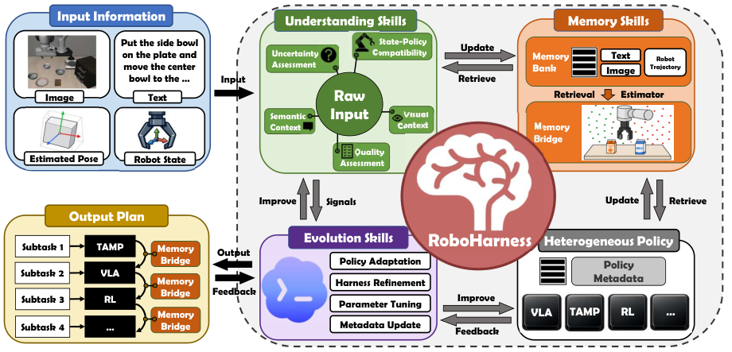

RoboHarness
选对下一项策略还不够：上一项策略留下的状态，必须让下一项接得住。
RoboHarness: Memory-Driven Orchestration of Heterogeneous Robot Policies for Long-Horizon Planning
LIBERO-LoHo：进度 97.5%、整任务成功 95.2%；真实桥搭建在重新藏起积木的扰动下从 86.7% 降至 66.7%。
01这篇要解决什么？
不同策略可以各自很强，但训练分布和动作接口不同，直接串联会在交接处失败。RoboHarness 将异构策略注册为可调用技能，并用理解、记忆和经验更新辅助选择。核心 Memory Bridge 处理策略之间的状态分布不匹配。
02先看一个场景
真机搭桥任务，指令是搭一座短桥，需要的积木里有一两块先被藏在柜子里。开柜门这类接触操作适合 VLA，按结构精确摆放积木适合 TAMP，两条策略各自都强。但把它们直接串起来，上一条留下的手臂构型可能正好是下一条难以规划的位置。
03方法怎样运转？

- 01
异构策略包成带 policy card 的可调用技能
每条策略保留自己的原生实现与输入输出，不要求统一动作表示，也不联合重训；外面套一张 policy card，记录类型、能力、接口要求、约束、假设、训练过哪些任务，以及历史执行统计。coding agent（实现上是 Codex 搭 GPT-5.5）据此在规划层比较与组合不同家族的策略，必要时还能直接读策略的实现代码来判断兼容性。仿真里挂的三条策略是：Physical Intelligence 官方的 pi05_libero 检查点、用 RLinf 在 LIBERO-90 上做过 GRPO 后训练的 OpenVLA-OFT 检查点，以及作者自己实现的 TAMP 规划器（PDDL 描述符号层，Fast-Forward 求解，PDDLStream 负责抓取位姿等连续量的采样）。
- 02
理解技能把观测变成能与能力边界比较的证据
五类理解技能各算一件事：不确定性评估在滑动窗口里统计物体位姿的均值与方差；视觉上下文用两个冻结编码器（SigLIP2 与 DINOv2）算嵌入、与记忆中该策略的训练轨迹比，两者相似度加权求和作为检索键；语义上下文用冻结的 BGE 编码器比对指令与各策略的语言描述；输入质量用曝光、拉普拉斯响应方差、对比度与图像熵这些常规图像处理指标打一个综合分；状态—策略兼容性则直接借 Memory Bridge 重建出的空间分布，给当前末端位姿与关节构型评分。coding agent 按需调用这些技能，再综合它们的结构化输出来拆任务、派策略。
- 03
记忆按链式节点存轨迹，检索分两级
记忆库里每条成功 rollout 是一串按时间链接的节点，节点存当时的视觉观测、任务提示、机器人状态（关节构型与末端位姿）以及对应的文本与视觉嵌入；链接关系让系统能从任一被检中的节点往前后展开执行上下文。检索是分层的：先用文本嵌入的余弦相似度取一批最相关的节点，再在这批节点里用视觉嵌入收窄。除了轨迹，系统另外维护跨任务的策略执行统计，作为能力估计与派发的经验依据；两者都在每次 rollout 之后更新。
- 04
Memory Bridge 把状态推进下一条策略的支撑区
交接分三步。先按下一个子任务与当前观测检索出锚点节点，沿各自轨迹前后各展开若干步，按时间偏移给每个节点赋一个进度分（锚点记零），用这些状态—分数对训一个轻量进度估计器，实验里用的是成对排序 SVM；同时用这批展开状态定义一个支撑域，只有与它们距离在阈值内的状态才算有效交接点。然后在支撑域内给候选状态打分，正分表示比锚点更靠前的进度。最后在支撑域与运动规划可达集的交集里，取进度分减去运动代价之后最大、且进度分非负的状态作为交接目标，调现成的运动规划策略生成过渡轨迹，再启动下一条策略。这段交接连同指令、观测与状态轨迹一并写回记忆，以后同类交接可以直接检索复用。
- 05
进化技能只在反复失败时才动
四类更新：策略适配接现成方法（SIMPACT 按执行反馈调抓取位姿，PDDLLM 在线学新的逻辑表示，二者都作用于 TAMP 一侧）；harness 精炼由 coding agent 改编排代码，修接口、改路由与协调逻辑；参数调优把连续参数离散成网格，agent 只预测调高、调低或保持这个方向，由单独的模块落成具体值；元数据更新据新的成败改写 policy card 的能力边界。触发条件不是每次 rollout，而是遇到持续性的执行失败；此时记忆技能取出相关的失败历史与执行证据交给 coding agent，由它决定用哪一种或哪几种。改动要经后续执行验证才保留，保留下来的跨评测 episode 延续。
plan, assign = agent.decompose(task, understanding_skills(obs), policy_cards)
for g, pi_next in zip(plan, assign):
anchors = retrieve(memory, text=g, then_visual=obs) # 先文本 TopK，再在其中视觉 TopK
if not compatible(robot_state, pi_next, anchors):
nodes = expand(anchors, horizon=l) # 沿链式轨迹前后展开
f = fit_progress(nodes, y=offset * dt) # 成对排序估计器，锚点记零分
region = support(nodes, eps) # 只有近邻状态算有效交接点
s_star = argmax(f(s) - lam * motion_cost(state, s)) # s 在支撑域 ∩ 可达集，且 f(s) >= 0
execute(motion_planner(state, s_star)) # 现成规划器生成过渡轨迹
obs, ok = execute(pi_next, g) # 策略保留原生接口，不联合重训
memory.append(nodes_of(rollout)) # 交接轨迹同样写回记忆
if persistent_failure(ok):
agent.evolve(retrieved_failures) # 改编排 / 调参 / 改 policy card，验证后保留方法与结果的原文定位见本页引用。
04跟着这个场景走一遍
教学推演：回到上面的场景。第一步，系统挂着两条策略：TAMP 负责有几何约束的取放与装配，π₀.₅ 负责开关柜门这类 TAMP 难建模的接触操作；两张 policy card 写明各自的能力、接口与历史统计，coding agent 读卡决定谁做哪一段。第二步，理解技能先把场景说清楚：视觉与语义上下文把当前观测、当前子任务分别和两条策略的训练轨迹与语言描述比，输入质量确认画面够清楚，不确定性评估看几帧里积木位姿稳不稳；结论是开柜门这一段落在 VLA 一侧，把积木按结构摆好落在 TAMP 一侧。第三步，在把开柜门交给 π₀.₅ 之前，先按文本检索出记忆里与这句子任务最相关的节点，再在这批节点里按视觉相似度收窄，拿到这条策略成功做过同类动作时的轨迹片段作为参照。第四步是交接：VLA 开完门后手臂停在门边，这个构型对 TAMP 的取放未必好规划。Memory Bridge 按下一个子任务检索 TAMP 的成功轨迹，沿轨迹前后展开出一批机器人状态、按时间偏移赋进度分，据此拟合局部的进度估计器并圈出支撑域，再在支撑域与运动规划可达集里挑一个进度分非负、运动代价又不高的状态，用现成运动规划器过去，然后才启动 TAMP；这段过渡轨迹同样写回记忆。第五步，如果这类交接反复失败，进化技能才被触发：coding agent 拿到失败历史后，可能改编排代码、沿网格把检索设置或交接接受阈值调一格，或者把这种条件下这条策略不可靠写回 policy card；改动要在后续执行中验证过才留下。要记住这套机制调度的是已有能力：如果两条策略都不会某一步，换谁去接都补不上。
05实验到底表现怎样？
论文含 LIBERO、LIBERO-Plus、LIBERO-LoHo、500 项自定义长程仿真任务，以及 135 次真实实验。真实平台组合 TAMP 与 π₀.₅；每种结构和扰动条件各 15 次，部分积木先藏在柜内。
作者报告的实验结果 · v2
| 表 2 · LIBERO-LoHo | 平均进度 | 整任务成功率 |
|---|---|---|
| π₀.₅ | 55.3% | 6.4% |
| LLM-guided π₀.₅ | 66.8% | 26.8% |
| H-WM-π₀.₅ | 84.9% | 64.8% |
| RoboHarness | 97.5% | 95.2% |
原始证据：记忆与 Bridge：§4.2 ↗ · 公开长程结果：表 2 ↗ · 组件消融：§7 / 图 4 ↗ · 135 次实机实验：§8 ↗
只看进度会低估交接失败：π₀.₅ 能完成部分步骤，最终却只有 6.4% 成功。真实桥任务为 86.7%，重新隐藏积木后为 66.7%，增加探索与重规划会撞上时间上限；这比只记 95.2% 更接近部署问题。
06收益来自哪里，又停在哪里？
消融与机制证据
图 4 在 500 项自定义任务上拆分理解、经验更新和 Memory Bridge。去掉 Bridge 仍保留较高进度，却更难完成整任务，符合“选对步骤但交接不稳”的机制解释。应将这组消融与公开基准结果分开。
结论的适用边界
模型来源基本都是现成的：两条 VLA 是公开检查点（Physical Intelligence 的 pi05_libero，以及用 RLinf 在 LIBERO-90 上做过 GRPO 后训练的 OpenVLA-OFT），编排与自我进化用的是 Codex 搭 GPT-5.5，理解技能里的编码器（SigLIP2、DINOv2、BGE）全部冻结、直接从 Hugging Face 取；作者自己实现的是 TAMP 规划器与整套 harness。运行时真正被训练的只有一样东西：Memory Bridge 每次交接现场用检索到的状态—进度对拟合的轻量进度估计器，它的可信度完全取决于检索到的经验是否覆盖当前状态。因此 Memory Bridge 依赖已有执行经验，新策略或记忆稀疏时边界估计可能不可靠。跨策略编排不能创造技能库中完全没有的能力，实机小样本也不意味着普遍可靠。
07放回全书的脉络
结合 Harness VLA 形成一个共同研究问题：如何判断策略现在是否处于可工作的状态，以及怎样低成本地把它带回这个状态？
08把阅读变成一个小研究
用网站实验章节的状态交接小实验起步，再在仿真里固定两个策略，比较直接串联、重试、显式过渡与真值过渡。
先自己回答：这项实验怎样才有解释力？
把交接前后状态偏差、局部成功、任务进度和整链成功一起画出来。若过渡估计噪声很大，Bridge 也可能有负作用，这正是值得研究的边界。
- 用自己的话说出这篇改变了哪个模块。
- 画出它的输入、输出和一次失败如何被处理。
- 复述一个结果，同时说清基线、指标与实验条件。这一问不给答案，材料在第 05 节。
先自己答，再看前两问的参考答案
这篇改了哪个模块改的是异构策略之间的交接状态，而不是任何一条策略的能力。每条策略保留自己的原生实现与输入输出，不要求统一动作表示，也不联合重训；理解技能里的编码器全部冻结、直接取现成权重；编排与自我进化交给现成的 coding agent。被换掉的是策略之间的那段空白：用 policy card 把异构策略登记成可比较、可调用的技能，用链式节点的记忆库存成功轨迹并做文本加视觉的两级检索，再由 Memory Bridge 在启动下一条策略之前，先把机器人从上一条策略留下的构型推进到下一条策略的支撑区。运行时真正被训练的只有 Memory Bridge 现场拟合的那个轻量进度估计器。
输入、输出与一次失败如何被处理输入是任务指令、当前观测与机器人状态（关节构型与末端位姿）、各条策略的 policy card（类型、能力、接口要求、约束、假设、训练过哪些任务与历史执行统计，必要时还可直接读策略的实现代码），以及理解技能产出的结构化证据：滑动窗口里物体位姿的均值与方差、冻结视觉编码器算出并加权求和的检索键、语义编码器对指令与策略语言描述的比对、由曝光与拉普拉斯响应方差等指标合成的输入质量分，还有借 Memory Bridge 重建的空间分布给当前位姿与构型打的兼容性评分；检索记忆时先用文本嵌入取一批相关节点，再在这批节点里用视觉嵌入收窄。输出是一份子任务划分与策略派发，以及每次交接时的一个交接目标状态与到达它的过渡轨迹——交接目标取在支撑域与运动规划可达集的交集里，是进度分减去运动代价之后最大且进度分非负的那个状态，过渡轨迹由现成运动规划器生成，走完才启动下一条策略，这段交接连同指令、观测与状态轨迹一并写回记忆供日后检索复用。失败在两个位置被处理：交接时的支撑域本身就是一道拒绝，只有与展开状态距离在阈值内的候选才算有效交接点，够不着的状态不会被当成交接目标；真正的更新则不由单次 rollout 触发，而是遇到持续性的执行失败时，由记忆技能取出相关失败历史与执行证据交给 coding agent，由它决定改编排代码修接口与路由、沿离散网格把某个连续参数调高或调低、接策略适配方法作用于 TAMP 一侧，或把这种条件下这条策略不可靠改写回 policy card；改动要经后续执行验证才保留，保留下来的跨评测 episode 延续。
选对下一项策略还不够：上一项策略留下的状态，必须让下一项接得住。
↗带着位置回到原文
首发日期用于时间排序；以下方法与结果对应 v2。数据为论文作者报告，本讲义没有独立复现实验。
QA就这一页提问或讨论
对某个数字、某条边界或某个推演有疑问，欢迎直接留言：讨论按页面分开，回复会保留在 XinrunXu/awesome-agentic-robotics-papers 的 Discussions 里，需要一个 GitHub 账号。